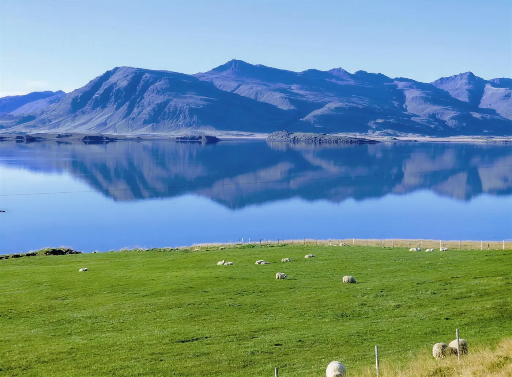
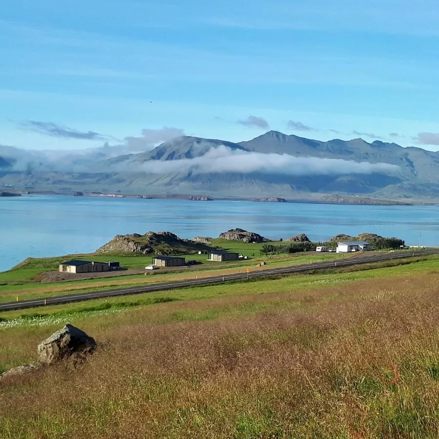
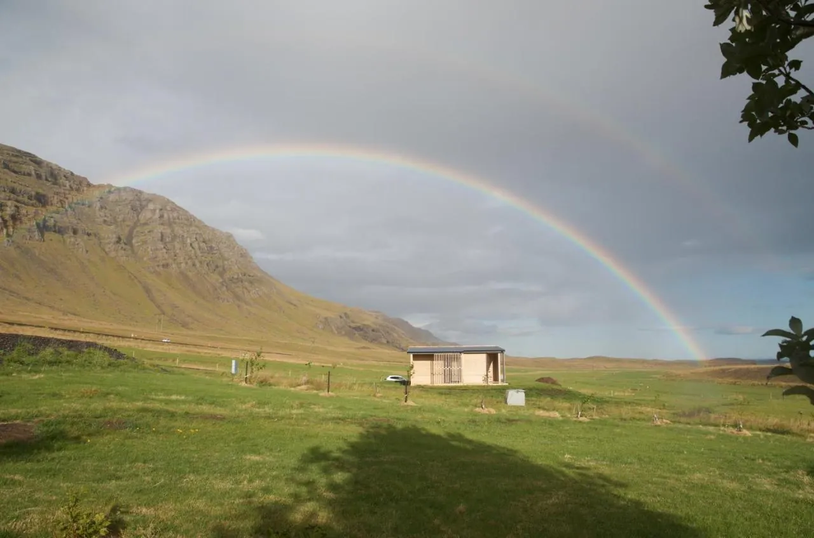
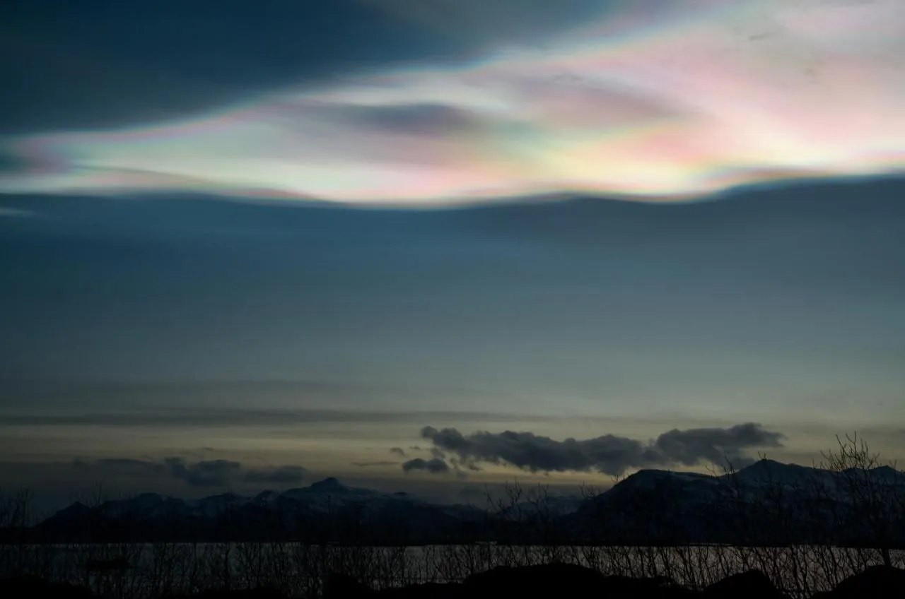
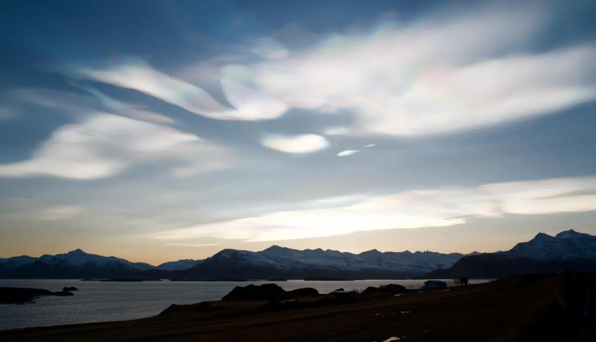

Álftafjörður
Álftafjörður means Swan Fjord. A shallow lagoon behind a sandbar, filled and emptied by the tide. The Ring Road runs along it and the houses look out over it.
A year of light
How far everything is
- HvalnesThe lighthouse on the coast to the south27 km30 min
- DjúpivogurThe nearest town28 km30 min
- TeigarhornNature reserve, known for its zeolites30 km30 min
- StokksnesVestrahorn from the black sand71 km1 h 10
- HöfnTown, and the airport at Hornafjörður76 km1 h 10
- EgilsstaðirOver the Öxi pass, a summer road. The coast road is longer111 km1 h 40
- JökulsárlónThe glacier lagoon135 km2 h
- ReykjavíkThe Ring Road along the south coast515 km7 h 30
- Keflavík AirportInternational flights553 km8 h




What guests ask
- Can you see the northern lights from the houses?
- Guests have watched them from their own porches. They need a clear, properly dark sky, and that darkness runs from late August to late April here. Nobody can promise them.
- How long is the day?
- From under four hours of sun in December to almost twenty two in June. The chart above shows every month.
- How do we get there?
- By car on the Ring Road, about 515 km from Reykjavík along the south coast, or about seven and a half hours without stops. The nearest airport is Hornafjörður, about 75 km away.
- Is the road open in winter?
- The Ring Road is kept open, but storms can close it. Check road.is and vedur.is before setting off.
- Where can we eat?
- Every stay has its own kitchen. The closest restaurant is at Bragðavellir, 12 to 15 km away, and Langabúð in Djúpivogur has a museum café, 23 to 27 km away. Check opening hours outside summer.
- Who do we book with?
- With the hosts directly, here on this site. Card payment runs through Teya.